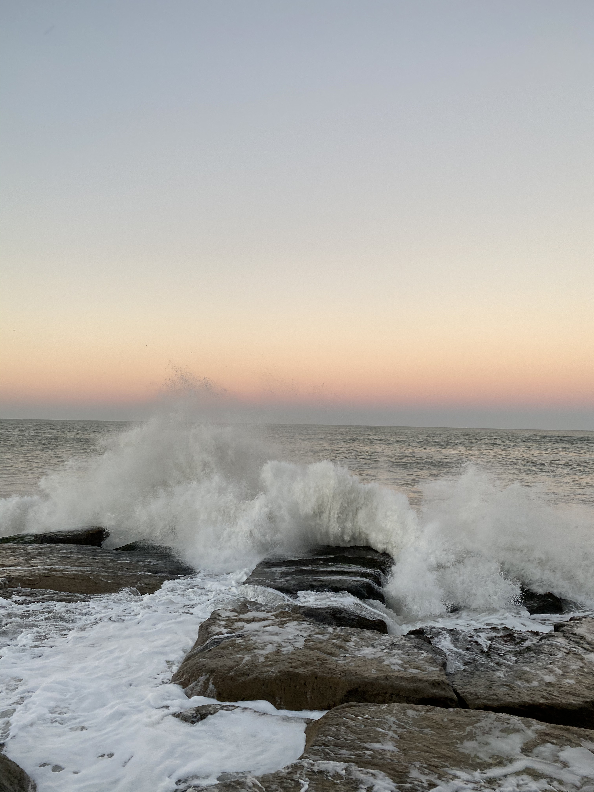
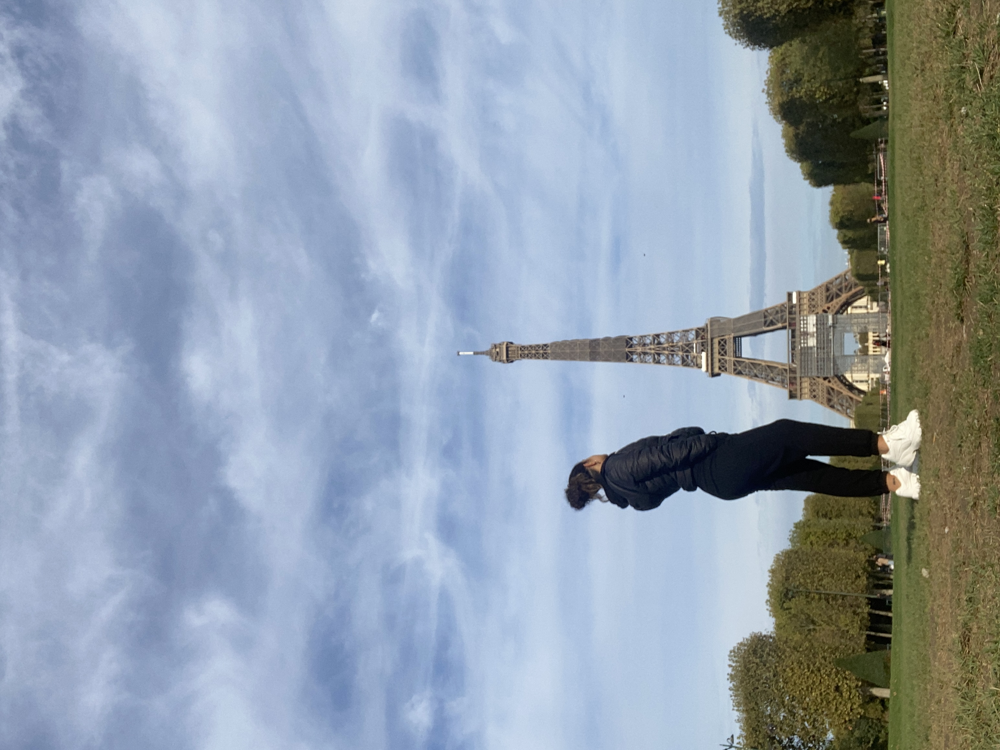
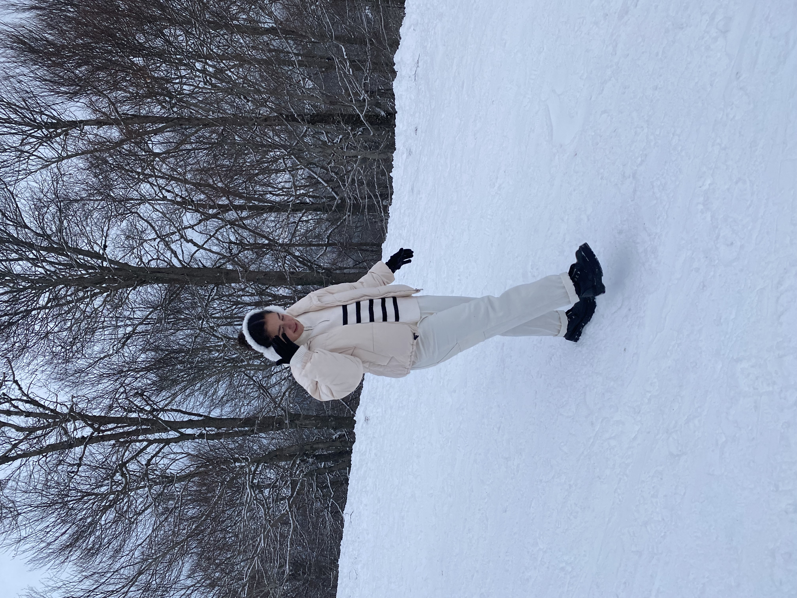
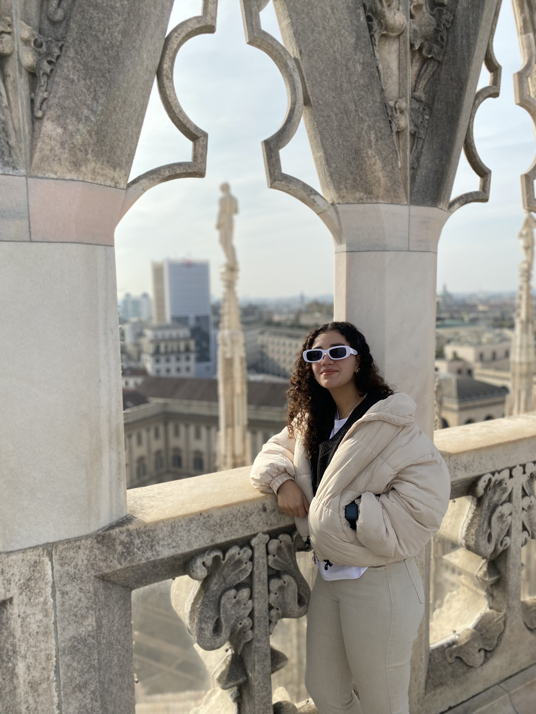

-

Atardecer en San Sebastián -

Costa de Mar del Plata - Argentina -

Torre Eiffel - París -

Ezcaray - La Rioja -

Catedral de Milán
Para que me conozcas un poco más...
Soy estudiante del Grado de Desarrollo Aplicaciones Web de la UNIR, mi interés por la informática se ha despertado hace poco tiempo pero en el transcurso de este grado se ha ido intensificando poco a poco. Tengo el título de Bachiller y también cursé dos carreras (Diseño Industrial y Turísmo) pero no he podido finalizar ninguna.
Soy argentina, con nacionalidad italiana viviendo en España, me mudé hace unos 5 años con mi padre en busca de un futuro mejor. Nací en Mar del Plata una ciudad costera de Buenos Aires asi que soy fanática del mar, como también de los amaneceres y atardeceres. Disfruto mucho todo lo que tiene que ver con la creatividad, las manualidades y el diseño. Me encanta conectar con la naturaleza y viajar. De momento he podido conocer Milan, Roma, Cuba, París, de España más que nada el País Vasco y La Rioja y bueno de Argentina mucho más.